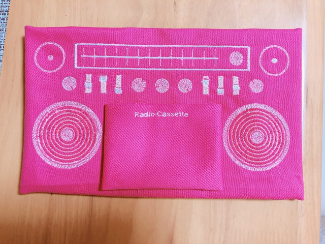
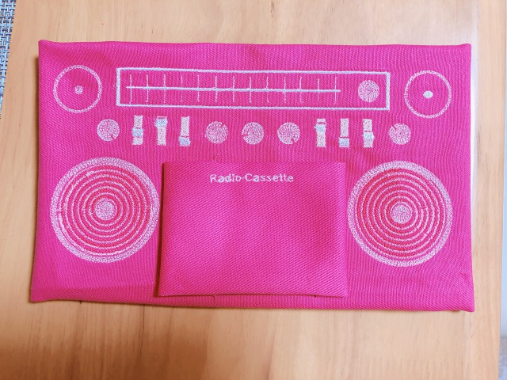

予約の仕方は事務員さんに聞けば教えてくれます。予約する時点でどんなものを作るか、具体的な案がある、 もしくはイラストレーターでデータを作った状態でどんな布にどんな柄を何色使って縫うかを決めてから行きましょう。
教学事務室の発券機で買えます。買ったものをウルトラファクトリーに持っていくとスタンプカード式の金券 と交換してもらえます。刺繍ミシンは1回の予約で支払う金額は200円です。予約した時間内であればどれだけ糸 やミシンを使っても200円です。
基本的にミシンの針が折れなさそうなものなら何でもしていいみたいです。
接着芯がないとうまく刺繍できないです。(例外あり)だいたい500円前後で売られています。
データがないと何もできないので絶対に用意しましょう。
データを入れてウルトラのパソコンや刺しゅうミシンにデータを移すときに必要です。

作りたい大きさの約3倍ほどの大きさで作るときれいにできる。
最終的に画像解析をするときに画像をピクセル化するような状態になるので大きく画像を作っておけば、 読み込まれやすく細かい部分まで再現されやすいので、画像は大きく作ることをおすすめする。

仮にハートマークを自分のやりたい刺繍の柄だったとした時、画像を取り込みペンツールを使って 画像の枠のパスを作る。この時枠線なしの塗りつぶしでデータを作っていく
色は刺繍の時に入れたい色ではなく隣り合う色と差がある色で塗るとデータが読み込まれやすいです。 似たような色合いのもを隣り合わせるとうまくデータが読み込まれないので差をつけることをお勧めします。 カラーピッカーの6桁の英数字は同じ色にしたいところは全部正確に合わせましょう。パソコンは少しでも違うと 見た目が似たような色でも、違う色だと認識されるので注意しましょう。

ファイル→書き出し→書き出し形式...→ファイルの種類[JPEG(.*JPG)] →カラーモード[RGB]→解像度[高解像度300]


 
